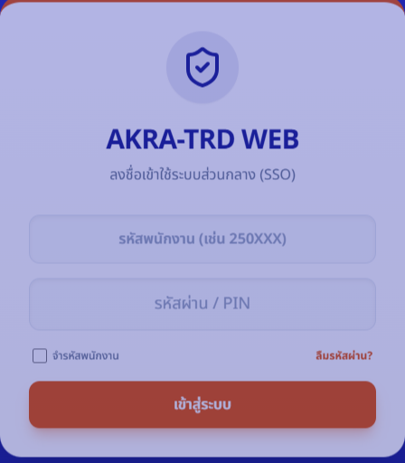
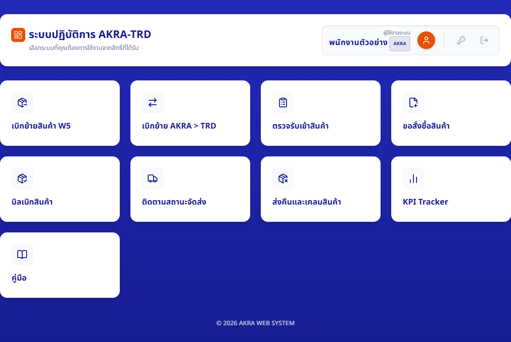
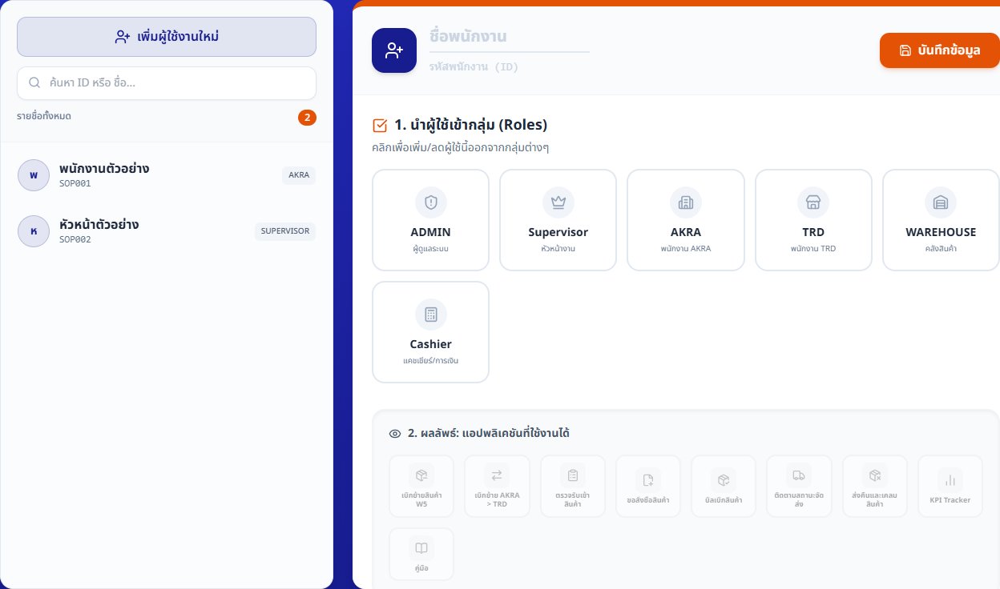
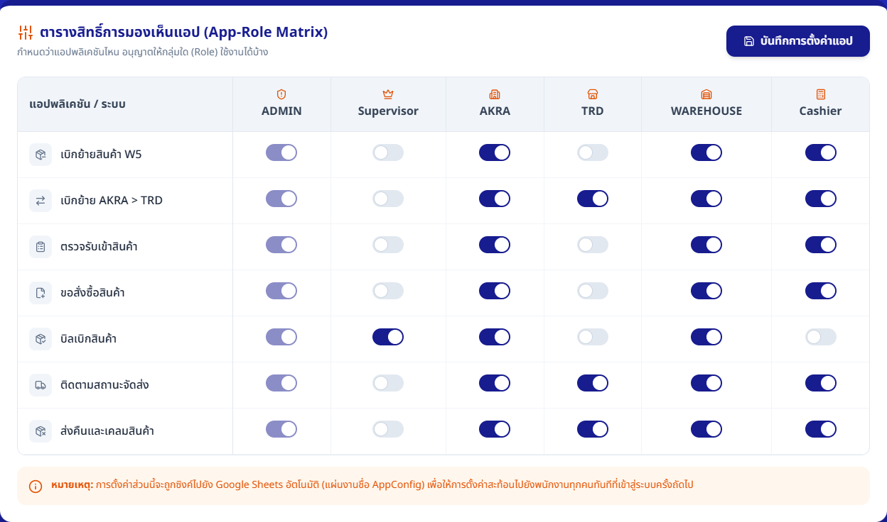
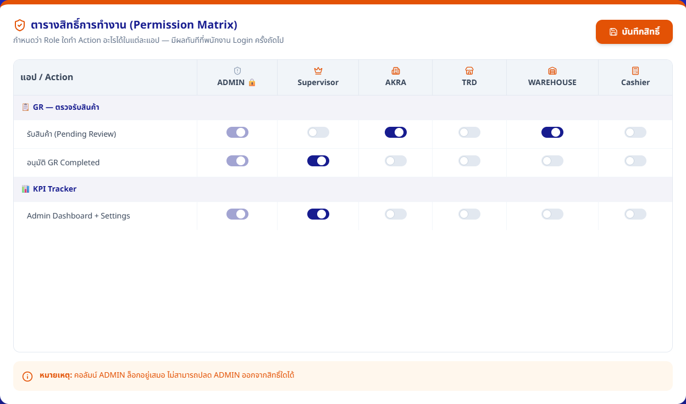

คู่มือพนักงาน · Main Portal — เข้าระบบและเปิดแอป
คู่มือเข้า Portal และดูแลสิทธิ์ Main
เข้าสู่ระบบ เปิดแอปที่ได้รับสิทธิ์ และให้ Admin ปรับบัญชีหรือสิทธิ์โดยไม่เปิดเผยรหัสผ่าน
ฉบับทดสอบภายใน: ใช้ตรวจขั้นตอนและความเข้าใจก่อนประกาศใช้
ส่วนที่ 1
เตรียมก่อนเริ่ม
- พนักงานเตรียมรหัสพนักงานและรหัสผ่านของตนเอง ห้ามใช้บัญชีร่วมกัน
- เปิดแอปย่อยผ่าน Main Portal ทุกครั้ง
- ขั้นตอนที่มีป้าย “Admin เท่านั้น” ต้องได้รับมอบหมายและตรวจคำขอก่อนบันทึก
ส่วนที่ 2
ทำตามขั้นตอน
-
พนักงานทุกคน
เข้าสู่ระบบด้วยบัญชีของตนเอง
ทำ: กรอก “รหัสพนักงาน” และ “รหัสผ่าน / PIN” แล้วกด “เข้าสู่ระบบ”
เช็ก: เห็นหน้า “ระบบปฏิบัติการ AKRA-TRD” และชื่อผู้ใช้งานของตนเอง

ใช้บัญชีของตนเองเท่านั้น หากลืมรหัสผ่านให้ใช้หัวข้อแก้ปัญหา ภาพอ้างอิง MAIN 20260705.01 -
พนักงานทุกคน
เปิดแอปจาก Portal
ทำ: ตรวจชื่อผู้ใช้งาน แล้วกดบัตรแอปที่ต้องใช้ เช่น “KPI Tracker” หรือ “ตรวจรับเข้าสินค้า”
เช็ก: แอปเปิดในแท็บใหม่พร้อมสิทธิ์ล่าสุด หากไม่เห็นบัตรแอปให้หยุดและแจ้งหัวหน้า

เลือกแอปจากบัตรที่ Portal แสดง ห้ามคัดลอกหรือส่งต่อข้อมูลการเข้าใช้งานในที่อยู่เว็บ ภาพอ้างอิง MAIN 20260705.01 -
Admin เท่านั้น · ข้อมูลบัญชีและ Role
เพิ่มหรือแก้ไขพนักงานตามคำขอที่อนุมัติ
ทำ: เปิด “จัดการพนักงาน” เลือกบัญชีหรือกด “เพิ่มผู้ใช้งานใหม่” ตรวจรหัส ชื่อ และ Roles แล้วกด “บันทึกข้อมูล”
เช็ก: รายชื่อและป้าย Role ถูกต้อง และช่อง “ผลลัพธ์: แอปพลิเคชันที่ใช้งานได้” ตรงกับหน้าที่

ตรวจ Role และผลลัพธ์การเห็นแอปก่อนบันทึก ห้ามเดาสิทธิ์หรือใช้บัญชีจริงเพื่อทดสอบ ภาพอ้างอิง MAIN 20260705.01 -
Admin เท่านั้น · AppConfig
กำหนดว่า Role ใดเห็นแอปใด
ทำ: เปิด “ตั้งค่าการเห็นแอป” ตรวจแถวแอปและคอลัมน์ Role เปลี่ยนเฉพาะรายการที่อนุมัติ แล้วกด “บันทึกการตั้งค่าแอป”
เช็ก: ตาราง App-Role Matrix ตรงกับคำขอ และพนักงานจะเห็นผลเมื่อเข้าสู่ระบบครั้งถัดไป

AppConfig ควบคุมการเห็นและเปิดแอป ไม่ได้ให้สิทธิ์กดทุกปุ่มภายในแอป ภาพอ้างอิง MAIN 20260705.01 -
Admin เท่านั้น · PermConfig
กำหนดสิทธิ์ทำรายการและตรวจผล
ทำ: เปิด “สิทธิ์ละเอียด” เปลี่ยน Action ของ Role ตามคำขอ กด “บันทึกสิทธิ์” แล้วให้พนักงานออกและเข้าสู่ระบบใหม่เพื่อทดสอบงานที่ได้รับ
เช็ก: พนักงานเห็นเฉพาะปุ่มที่ได้รับสิทธิ์ คอลัมน์ ADMIN ยังล็อก และการทดสอบไม่ใช้ข้อมูลจริงที่ไม่จำเป็น

PermConfig ควบคุม Action ภายในแอป แยกจาก AppConfig และมีผลเมื่อ Login ครั้งถัดไป ภาพอ้างอิง MAIN 20260705.01
ส่วนที่ 3
เช็กก่อนจบงาน
งานเสร็จเมื่อครบทั้ง 4 ข้อ
- ชื่อผู้ใช้งานบน Portal ตรงกับผู้ที่กำลังทำงาน
- พนักงานเปิดแอปจาก Portal และเห็นเฉพาะแอปที่ได้รับสิทธิ์
- หลังเปลี่ยนสิทธิ์ พนักงานออกและเข้าสู่ระบบใหม่แล้วทดสอบเฉพาะงานที่ได้รับ
- ไม่มีการส่งต่อรหัสผ่าน ข้อมูลการเข้าใช้งาน หรือภาพบัญชีจริง
ส่วนที่ 4
แก้ปัญหาที่พบบ่อย
เลือกข้อความที่ตรงกับหน้าจอ แล้วทำตามทีละข้อ
ลืมรหัสผ่าน หรือระบบขอให้เปลี่ยนรหัสผ่านเริ่มต้น
- กด “ลืมรหัสผ่าน?” แล้วติดต่อ HR หรือ Admin
- Admin รีเซ็ตเฉพาะเมื่อยืนยันตัวบุคคลและคำขอแล้ว
- เข้าสู่ระบบด้วยรหัสเริ่มต้นและเปลี่ยนเป็นรหัสลับของตนเองทันที
ไม่เห็นแอป หรือเปิดได้แต่ไม่มีปุ่มที่ต้องใช้
- อย่าใช้บัญชีของคนอื่น
- กลับ Main Portal แล้วเปิดแอปใหม่หนึ่งครั้ง
- ถ้ายังไม่เห็น ให้แจ้งหัวหน้าระบุชื่อแอปและงานที่ต้องทำ
- Admin ตรวจ Role, AppConfig และ PermConfig แยกกันก่อนเปลี่ยน
เซสชันหมดอายุ สิทธิ์เปลี่ยน หรือแอปขอให้เข้าสู่ระบบใหม่
- กลับ Main Portal
- เข้าสู่ระบบใหม่ แล้วเปิดแอปจากบัตรเดิม
- ห้ามคัดลอกข้อมูลการเข้าใช้งานจากที่อยู่เว็บไปให้ผู้อื่น
เชื่อมต่อไม่สำเร็จชั่วคราว แต่ Portal ยังแสดงข้อมูลล่าสุดที่บันทึกไว้
- รอสักครู่แล้วกดรีเฟรชหนึ่งครั้ง
- อย่าออกจากระบบเพียงเพราะเครือข่ายสะดุด
- Admin ห้ามบันทึกการตั้งค่าจนกว่าจะโหลดข้อมูลล่าสุดสำเร็จ
เห็นข้อความว่ามีเวอร์ชันใหม่ หรือไม่แน่ใจว่าการตั้งค่าบันทึกแล้ว
- กด “รีโหลด” ตามข้อความก่อนทำรายการต่อ
- เปิดหน้าตั้งค่าใหม่และตรวจค่าปัจจุบัน
- ถ้ายังไม่ชัดเจน หยุดและให้ Admin อีกคนตรวจ ห้ามกดบันทึกซ้ำแบบเดา
ต้องหยุดและแจ้งหัวหน้า
- หยุดเมื่อชื่อผู้ใช้ไม่ตรง คำขอสิทธิ์ไม่มีผู้อนุมัติ หรือขอบเขตงานไม่ชัดเจน
- ห้ามเปลี่ยน Role, AppConfig หรือ PermConfig หากอาจให้สิทธิ์เกินหน้าที่
- ลืมรหัสผ่าน หรือระบบขอให้เปลี่ยนรหัสผ่านเริ่มต้น
-
- กด “ลืมรหัสผ่าน?” แล้วติดต่อ HR หรือ Admin
- Admin รีเซ็ตเฉพาะเมื่อยืนยันตัวบุคคลและคำขอแล้ว
- เข้าสู่ระบบด้วยรหัสเริ่มต้นและเปลี่ยนเป็นรหัสลับของตนเองทันที
- ไม่เห็นแอป หรือเปิดได้แต่ไม่มีปุ่มที่ต้องใช้
-
- อย่าใช้บัญชีของคนอื่น
- กลับ Main Portal แล้วเปิดแอปใหม่หนึ่งครั้ง
- ถ้ายังไม่เห็น ให้แจ้งหัวหน้าระบุชื่อแอปและงานที่ต้องทำ
- Admin ตรวจ Role, AppConfig และ PermConfig แยกกันก่อนเปลี่ยน
- เซสชันหมดอายุ สิทธิ์เปลี่ยน หรือแอปขอให้เข้าสู่ระบบใหม่
-
- กลับ Main Portal
- เข้าสู่ระบบใหม่ แล้วเปิดแอปจากบัตรเดิม
- ห้ามคัดลอกข้อมูลการเข้าใช้งานจากที่อยู่เว็บไปให้ผู้อื่น
- เชื่อมต่อไม่สำเร็จชั่วคราว แต่ Portal ยังแสดงข้อมูลล่าสุดที่บันทึกไว้
-
- รอสักครู่แล้วกดรีเฟรชหนึ่งครั้ง
- อย่าออกจากระบบเพียงเพราะเครือข่ายสะดุด
- Admin ห้ามบันทึกการตั้งค่าจนกว่าจะโหลดข้อมูลล่าสุดสำเร็จ
- เห็นข้อความว่ามีเวอร์ชันใหม่ หรือไม่แน่ใจว่าการตั้งค่าบันทึกแล้ว
-
- กด “รีโหลด” ตามข้อความก่อนทำรายการต่อ
- เปิดหน้าตั้งค่าใหม่และตรวจค่าปัจจุบัน
- ถ้ายังไม่ชัดเจน หยุดและให้ Admin อีกคนตรวจ ห้ามกดบันทึกซ้ำแบบเดา
- ต้องหยุดและแจ้งหัวหน้า
-
- หยุดเมื่อชื่อผู้ใช้ไม่ตรง คำขอสิทธิ์ไม่มีผู้อนุมัติ หรือขอบเขตงานไม่ชัดเจน
- ห้ามเปลี่ยน Role, AppConfig หรือ PermConfig หากอาจให้สิทธิ์เกินหน้าที่